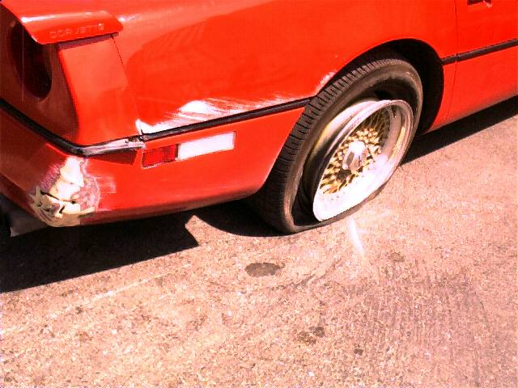

The accident occured on California Highway 17. I was entering 17 from Interstate 280 going South. This entrance is rather large with 2 lanes coming from 280 North and 2 lanes coming in from 280 South. That, plus 880 which changes names to 17 at this point. All totaled there are 6 lanes of traffic. The right 2 lanes exit to Hamilton Avenue and get pretty crowded. The left 2 lanes continue down 17 South toward Santa Cruz and also back up in traffic at rush hour as there are a lot of people who go over the hill to Santa Cruz.
This is not an unknown section of road to me. In fact I travel it frequently. And I usually change into lane #4 (counting from the divider) which quickly collapses with lane #3. Lanes #3 and #4 quickly merge to one lane. It's sometimes a difficult manuever because the angel is such that you cannot see people in lane #3 from your side view mirror. For this reason I always check by turning my head to see what the traffic situation is like in lane #3 when I enter lane #4 because soon I will have to merge with that lane.
This day the coast was clear as far as I could tell so I got into lane #4 and proceeded to the merge point with lane #3. The next thing I knew my Vette accelerated about 5 or 10 MPH more without me giving it any more gas. It soon became apparent to me that I was being pushed and I was starting to turn sideways, sliding down 17 perpendicular to the flow of traffic.
Then I continued in a counterclockwise spin, crossing lanes #2 and #1 and smashed into the concrete divider. Thank God there was nobody in those 2 lanes. I bounced off of the divider then, once again hit it about 40-50 feet down.
I jumped out of the car to survey the damage but it was clear to me that the damage would be extensive. My right rear tire and bumper was smashed up against the divider so I went back to the car to drive it forward away from the divider. By this time traffic was stopped on the highway so there was no danger. I could not get the door open - it was smashed closed so I jumped in as the top was down.
After looking at the rear wheel I saw it was going flat and the rim was bent beyond repair.
As far as I can tell the garbage truck driver must have been in lane #2 and was in the process of changing lanes to lane #3 at about the point where lane #3 and #4 merge. He could not see me because his truck is so tall and my Vette is so low. The truck driver made the comment that he did not see me but was watching to insure he had enough room in front of the car behind him. I assume he meant to change lanes. He was probably fixated on his right side view mirror making sure his long truck would be able to change lanes. From this position he could have easily missed me being in the lane.
As you can see by the following photos the
initial impact was with my left rear tire causing me to start spinning
where my driver door was next hit. By this time the garbage truck driver
said he was applying his brakes furiously as he became aware that he had
hit me and was pushing me. Luckily this allowed me to do a 270 degree turn
in front of him heading for the divider. And luckily nobody was in the
other two lanes as I spun past.
|  |
Copyright © 1997-2000Andrew DeFaria